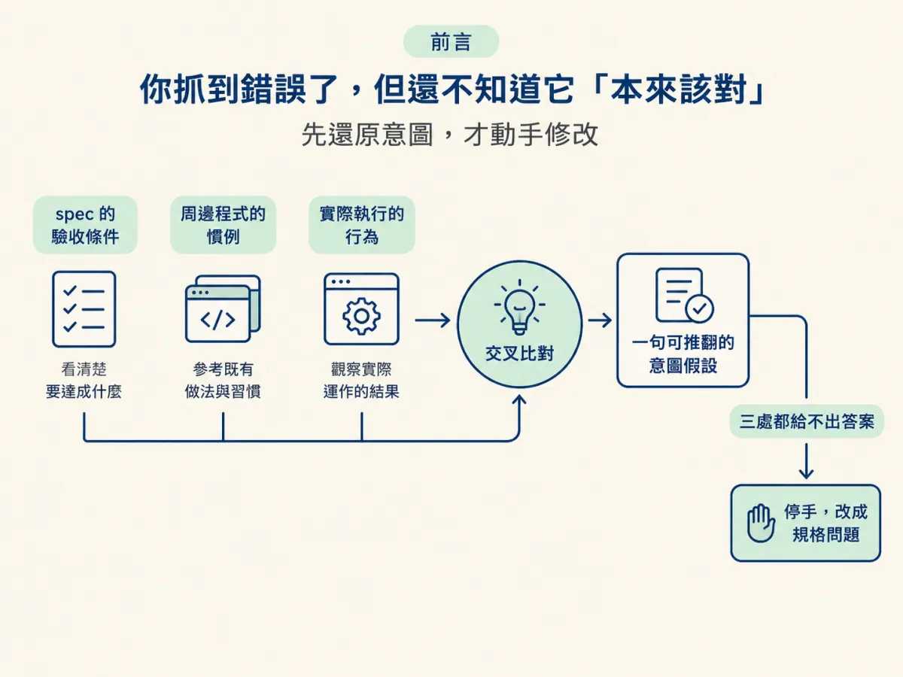
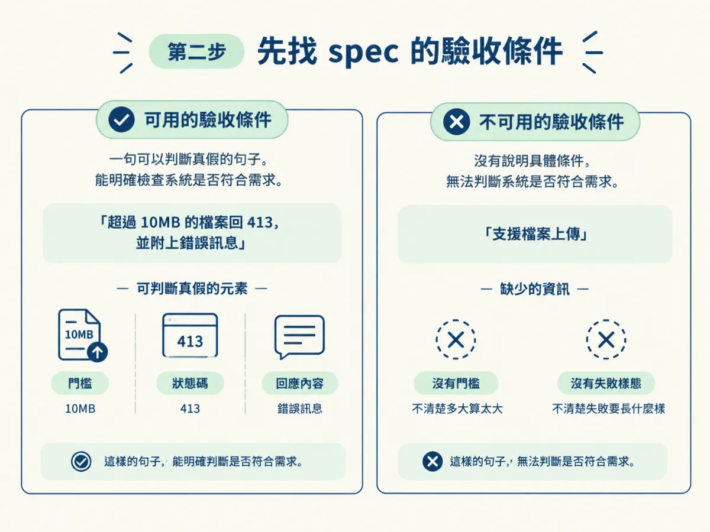
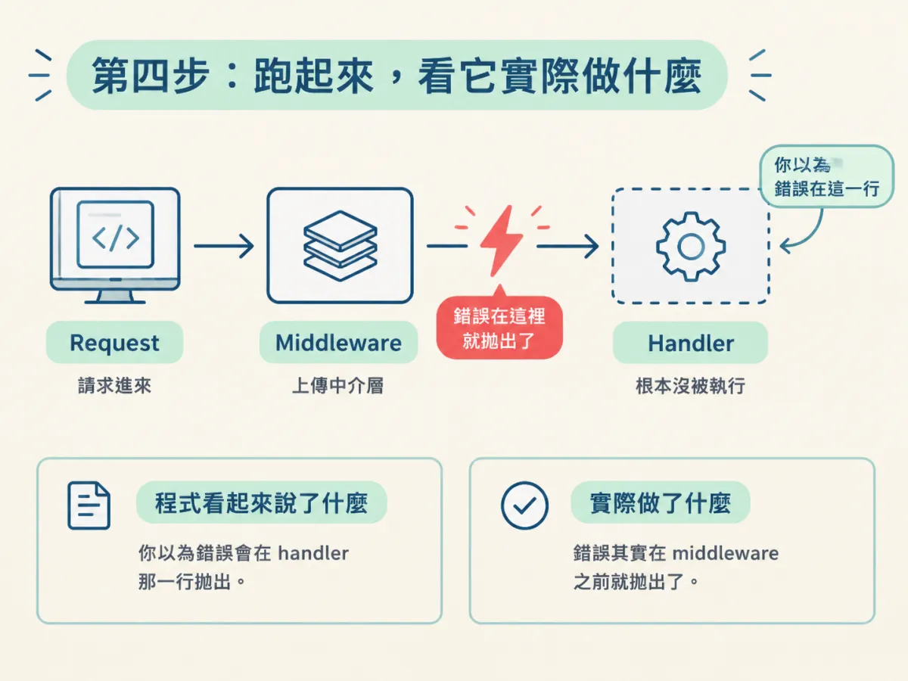
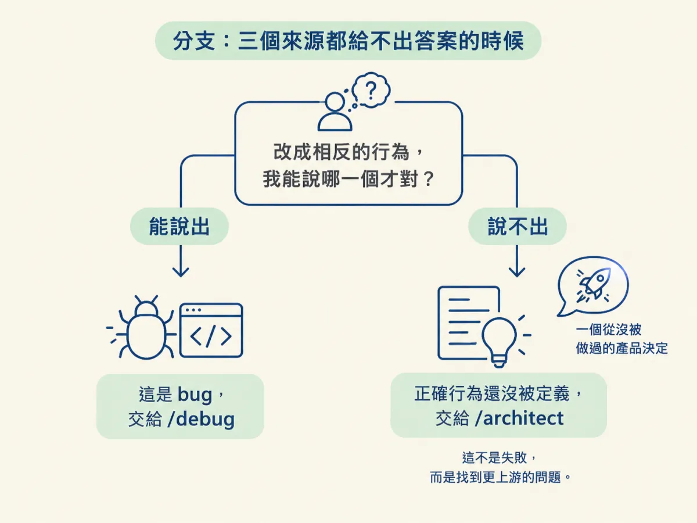

能用 spec 的驗收條件、周邊程式的慣例、實際執行的行為三處還原一段陌生碼的意圖；並在沒有 spec 時判斷這是「從沒做過的決定」，而不是一個你能修的 bug。
上一節你接受了一件事：這段碼不是你想的，是別人寫的。你也把「這行大概想幹嘛」從前提降級成假設。
現在你手上有了一個可重現的失敗：什麼輸入、預期什麼、實際發生什麼。接下來最容易犯的錯，是立刻開始改。因為「壞掉」只告訴你結果不對，沒有告訴你本來應該是什麼。少了後半段，你只能改到某個看起來合理為止，那正是「無法解釋的修好」。
這一節是一個還原流程：在動手之前，先把「它被要求做什麼」變成一份有證據的答案。整個流程只用到三個來源，順序有講究，而且最後有一個分支會讓你停手。

先確認你手上有這些材料，沒有的話先補齊，後面的步驟才有東西可比對。
拿一張紙或一個暫存檔，寫兩欄。左邊只放事實：完整的錯誤訊息、觸發的輸入、你預期什麼、實際觀察到什麼。右邊放猜測：「我覺得它應該是想……」。
這個動作看起來很瑣碎，但它有一個實際作用：讓後面的三個來源有地方放。沒有分欄，你的猜測會混進事實裡，然後在下一步被當成證據引用。
還有一個好處：當你之後找到意圖，你可以回頭看右欄，確認自己原本猜錯在哪。猜錯的地方，往往就是你對這個專案理解最薄的地方。
spec 是三個來源裡最有力的一個，因為它寫的是「它承諾了什麼」，而不是「它做了什麼」。這兩句話的差別，就是整個調查的槓桿。
有了驗收條件，你的調查就從「四處亂看」變成一場比對：這裡是承諾，這裡是實際，找出中間的缺口。缺口就是 bug 的位置。
什麼算驗收條件？一句可以判斷真假的句子。例如「超過 10MB 的檔案回 413，並附上錯誤訊息」可以判真假；「支援檔案上傳」不行，它沒有說多大算太大、失敗要長什麼樣。

如果 spec 只寫得出後者，先把它記下來，然後往下走。這個「規格本身不夠具體」的觀察，晚一點會決定你要不要停手。
Spec 說的是功能承諾，周邊程式說的是風格與結構上的承諾：錯誤怎麼回、驗證放在哪一層、命名怎麼取、哪些事情由 middleware 做。
讀的時候問一個問題：「如果照這個檔案鄰居的寫法，這段應該長什麼樣？」
偏離慣例的地方就是嫌疑犯。偏離不一定錯，有時候是刻意的，但它值得你先看。比方說，其他所有端點都在 handler 開頭用 schema 驗證並回 400，只有這一個把驗證塞在資料庫查詢之後；那不管你最後結論是什麼，這個差異都需要一個理由。
第三步讀的是「程式看起來說了什麼」，這一步看的是「它實際做了什麼」。這兩件事在同步、單純的程式裡通常一致；在非同步、middleware 順序、預設值、錯誤被吞掉的地方，經常不一致。
做法不用複雜：用最小的輸入跑一次，在關鍵邊界上加 log 或中斷點，確認流程真的走到你以為的那一行。很多時候你會發現，錯誤根本不在你讀的那個函式裡，而是在它之前就拋出去了。

把前面三段材料放在一起，寫出一句話，格式固定：「我認為這段碼被要求做 X，因為（證據一）（證據二）（證據三）；如果 Y 成立，這個假設就錯。」
最後那半句很重要。沒有它，你的假設只是一個比較有禮貌的猜測；有了它，你就知道下一個實驗要幹嘛。
看一個示範（以下情境是為說明而設計的，不是來源裡的案例）。某個上傳端點回 500，spec 的驗收條件寫著「超過 10MB 回 413 並附錯誤訊息」。周邊的端點都在 handler 開頭驗證、回 400。實際跑起來，log 顯示錯誤在進到 handler 之前就拋出了。
// 示範：上傳 middleware 先執行，錯誤還沒進到 handler 就發生了
app.post('/upload', upload.single('file'), (req, res) => {
// 這裡根本還沒被執行，所以 handler 裡的錯誤處理幫不上忙
})
於是你寫下：「我認為大小限制被設在上傳 middleware，而那個 middleware 的錯誤沒有被接住，因為 spec 要求 413、實際回 500，而且錯誤發生在 handler 之前。如果把 limit 調高後仍然回 500，這個假設就錯。」
這句話有承諾、有行為、有位置，而且寫明了怎麼推翻它。到這裡，你才真的可以開始改，而且你會知道要改哪裡、改完要驗什麼。
有些情況你會走到底，卻發現沒有東西可以比對：沒有 spec、周邊程式沒有相關慣例、執行行為也說不出對錯。這時候你找到的不是 bug。
來源的講法是：一個行為背後沒有被記錄下來的決定，不是你能修的 bug，而是一個從沒被做過的決定。你無法判斷程式對不對，因為「對」長什麼樣還沒有人定義。
這種情況不屬於 /debug，屬於 /architect。
要在當場分辨，問自己一句：「如果把這段改成相反的行為，我能說出哪一個才是對的嗎？」如果答不出來，那就不是除錯問題，是規格問題。硬修下去，你只會得到一個能跑、但沒有人同意它正確的版本。

這個分支不是失敗。來源說得很清楚：當你發現沒有意圖可以還原，你找到的東西比 bug 更有價值：你找到的是一個還沒被決定的產品行為，而它遲早要有人決定。
做完這輪，你應該能拿出下面其中一種結果：
/architect。最常見的失敗，是把意圖假設直接當成結論，然後開始改程式。那會讓你繞回上一節講的坑：你修的是自己的理論，不是程式。第二常見的失敗，是在沒有 spec 時硬修，最後得到一個「測試綠了、但沒人說得出為什麼這樣才對」的行為。
還原意圖靠三個來源：spec 的驗收條件告訴你它承諾了什麼，周邊程式告訴你它該遵守什麼慣例，實際執行告訴你真實發生了什麼。三處交叉之後，寫成一句可推翻的假設，再動手。如果三處都給不出答案，你面對的不是 bug，而是一個從沒被做過的決定，那是 /architect 的工作。
有了意圖，你就能判斷「哪裡不對」。但 AI 寫的碼出錯，通常會落在幾種固定的形狀裡。認得那些形狀，你會更快知道第一個該檢查哪裡。下一節把四種模式整理成一張表。